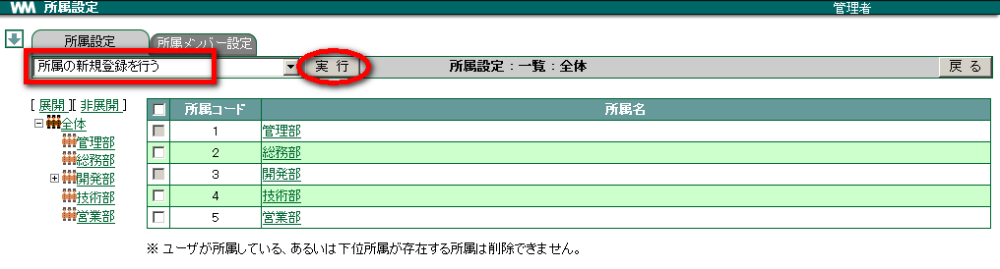
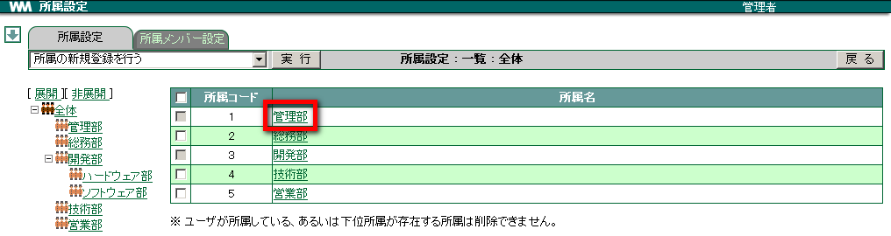
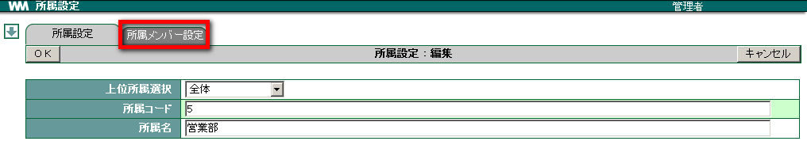

2. 所属¶
WebMagic の「所属」は組織内での「部署」にあたります。所属は階層的に登録でき、その階層数に制限はありません。
2.1. 所属を設定する¶
メニューの
 をクリックします。
をクリックします。 をクリックします。
をクリックします。プルダウンメニューより 所属の新規登録を行う を選択し、 実行 をクリックします。

各項目を入力し、 OK をクリックします。

Note
所属コードには任意の数字を入力します。複数の所属を登録する場合、所属コードが重複しないようにします。また、複数の所属を登録した場合、所属は所属コードが若い順に表示されます。
2.2. 階層的に所属を設定する¶
メニューの
をクリックします。- をクリックします。
プルダウンメニューより 所属の新規登録を行う を選択し、 実行 をクリックします。
「上位所属選択」から、階層的に登録したい所属コードを選択します。

その他の各項目を入力し、 OK をクリックします。
Note
所属コードには任意の数字を入力します。複数の所属を登録する場合、所属コードが重複しないようにします。また、複数の所属を登録した場合、所属は所属コードが若い順に表示されます。
2.3. 所属を修正する¶
メニューの
をクリックします。- をクリックします。
修正したい所属の 所属名 をクリックします。

各項目を修正し、 OK をクリックします。
2.4. 所属を削除する¶
メニューの
をクリックします。- をクリックします。
削除したい所属にチェックを付けます。

プルダウンメニューより チェックされた所属を削除する を選択し、 実行 をクリックします。

確認メッセージが表示されたら、 OK をクリックします。
Warning
Warning
2.5. ユーザーの所属を設定する¶
設定画面の ユーザー からではなく、 所属 からユーザーの所属を設定できます。
メニューの
をクリックします。- をクリックします。
ユーザーを登録・削除したい 所属名 をクリックします。

[ユーザー一覧] タブをクリックします。

登録したいユーザーを選択し、 追加→ をクリックします。

削除したい場合は「選択ユーザー一覧」からユーザーを選択し、 ←削除 をクリックします。

適用 をクリックします。